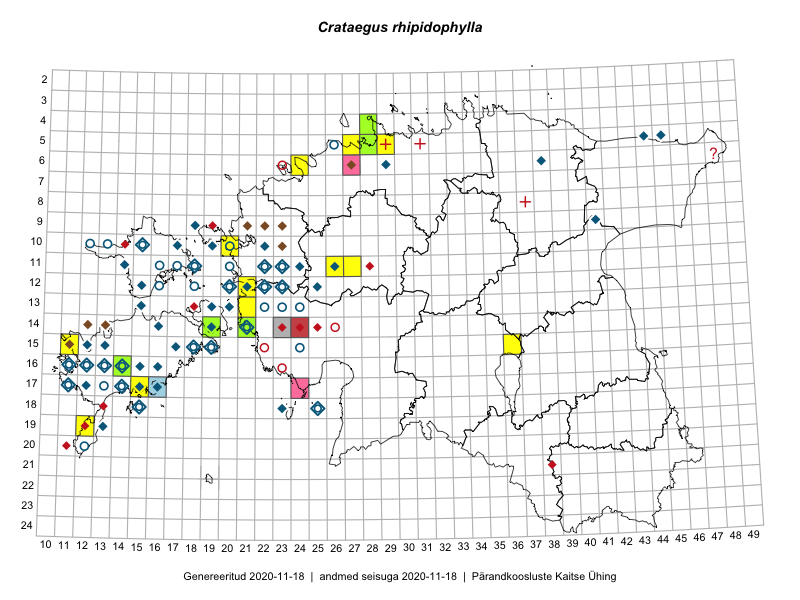

Crataegus rhipidophylla
Uuendatud: 2016-12-07
Kaardile koondatud taksonid: Crataegus rhipidophylla Gand.

Kaart põhineb 11 vaatlusel. Taime on leitud 9 ruudust.
| Ruut | Vaatleja(d) | Vaatlusaeg | Kirje tüüp | Viide andmebaasikirjele |
|---|---|---|---|---|
| 06-24 | Erkki Otsman, Sergei Smirnov | 2015-05-29 | ruut/ala | vaata PlutoFis |
| 05-27 | Erkki Otsman, Sergei Smirnov | 2015-07-08 | ruut/ala | vaata PlutoFis |
| 15-11 | Mari Reitalu | 2014-05-18 | ruut/ala | vaata PlutoFis |
| 05-28 | Erkki Otsman, Sergei Smirnov | 2015-06-26 | ruut/ala | vaata PlutoFis |
| 05-29 | Erkki Otsman, Sergei Smirnov | 2015-07-12 | ruut/ala | vaata PlutoFis |
| 19-12 | Oliver Parrest | 2015-05-16 | ruut/ala | vaata PlutoFis |
| 05-28 | Erkki Otsman, Sergei Smirnov | 2015-06-29 | punkt | vaata PlutoFis |
| 05-28 | Erkki Otsman, Sergei Smirnov | 2015-06-29 | punkt | vaata PlutoFis |
| 11-26 | Aat Sarv | 2015-07-21 | ruut/ala | vaata PlutoFis |
| 10-20 | Ott Luuk, Peedu Saar | 2014-07-29 | ruut/ala | vaata PlutoFis |
| 11-27 | Andrus Jair, Tõnu Ploompuu | 2015-05-17 | ruut/ala | vaata PlutoFis |